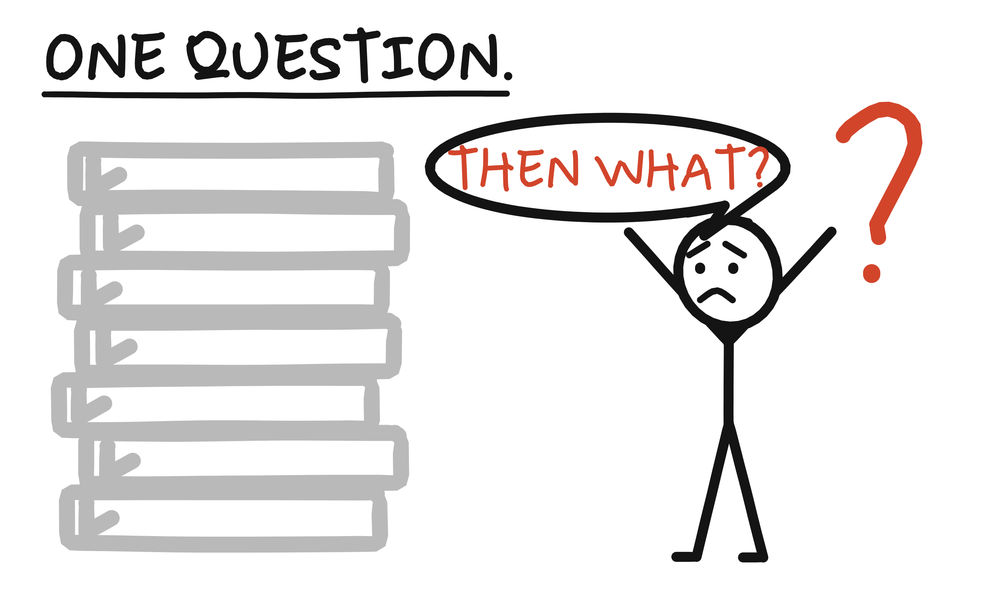
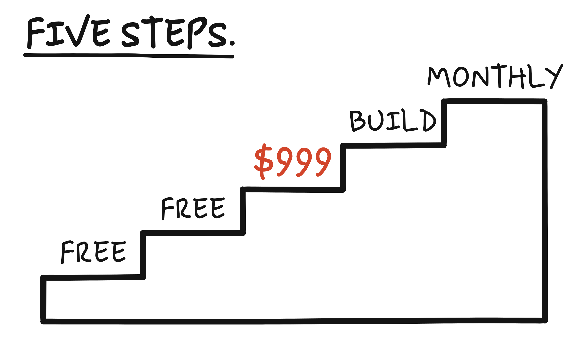
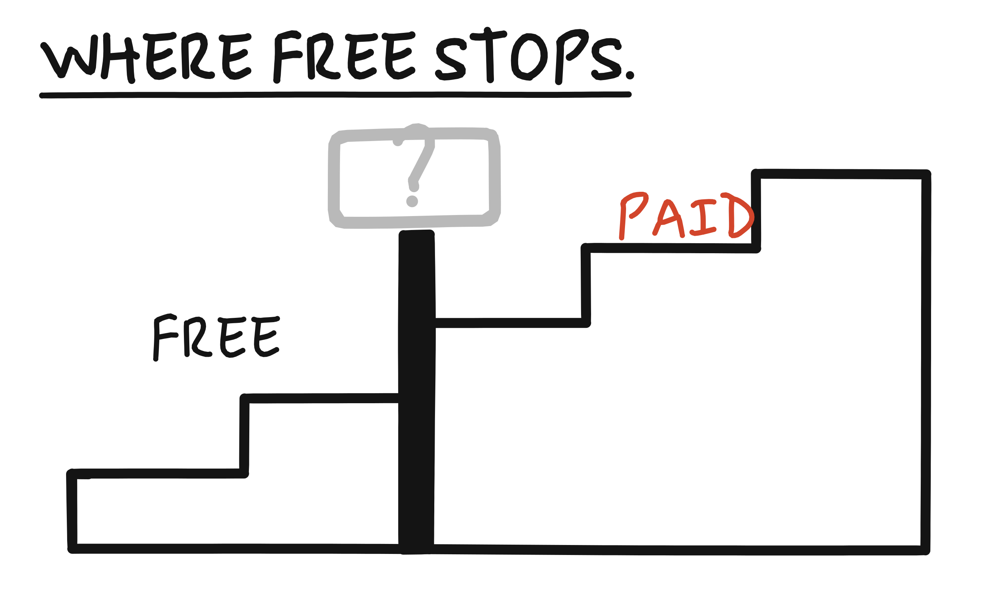
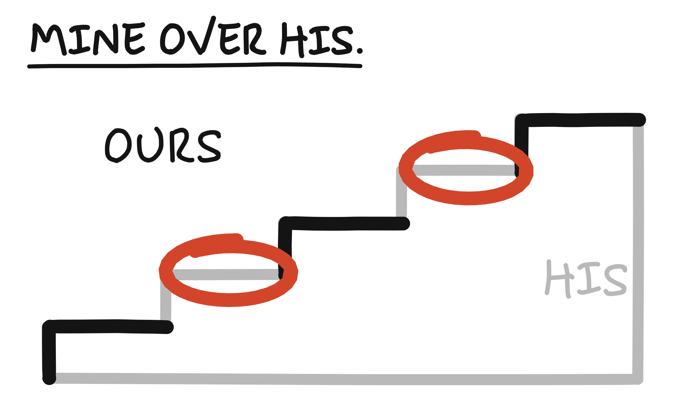
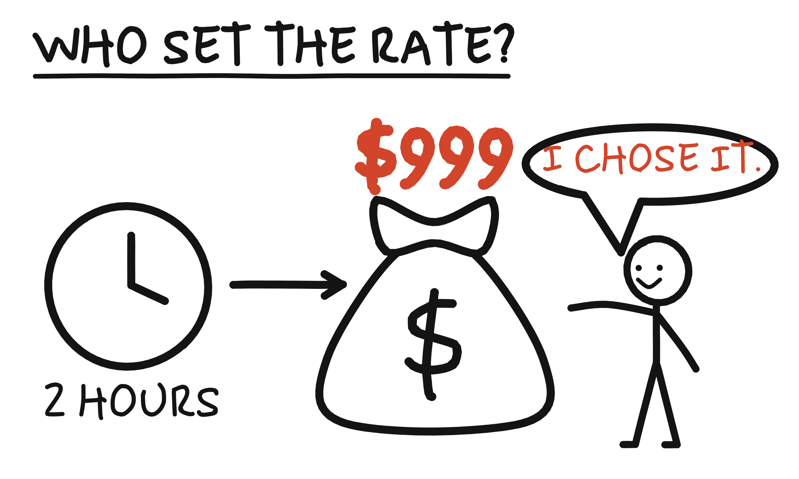
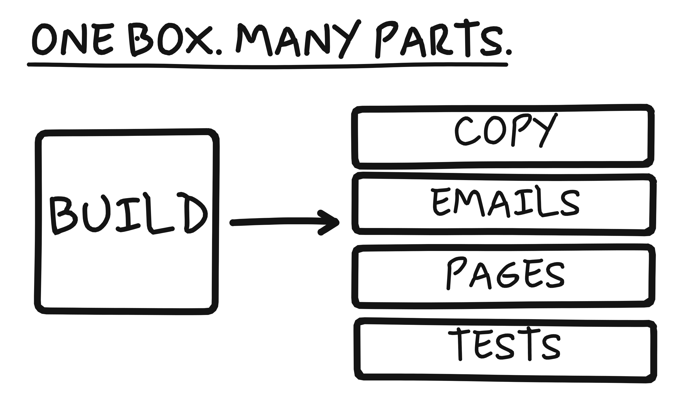
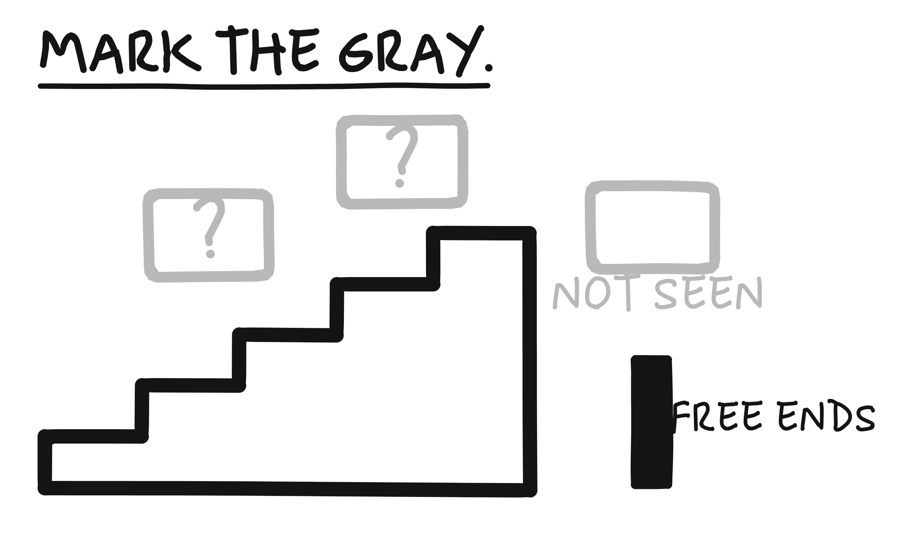

Draft v2, November 17, 2026. For Daegan to read and mark up. Not linked from anywhere, not for sharing yet.
Somebody hands you a big model you can't see, and says: get inside this.
On November 17, 2026, that was me.
My partner Jimmy had notes on how Corey Ganim runs his AI consulting business. Corey sells AI help to small businesses, and by his own account the model works. Jimmy had notes, a breakdown of one of Corey's calls, and two write-ups of his course.
I couldn't watch it all. And watching all of it wouldn't have done what I needed.
So I did what I learned to do in a bookstore.
Years ago I bought Dan Roam's book, hoping it would help with my first seminar.
I sat down with it in a Barnes & Noble, and it did far more than that.
It gave me a new language, and the language taught me how to learn.
First I made a key. A mirror means this. A light bulb means this. An exclamation point means this.
Then I put the symbols together to make concepts.
Then I used them to learn the concepts.
That's the part I didn't expect. I was trying to teach people, and I came to understand the ideas better myself.
On Nov 17 I added two symbols to the key. You'll meet them below.

I started building an offer before I could say what Corey does.
Then I said it out loud: this rings hollow.
I was building on a picture I didn't have.
So I stopped and did the slower thing. I couldn't compare his model to ours until I could say his plainly.
I asked my AI questions of Jimmy's notes, one at a time, and I kept asking the same one:
And then what happens?
One answer was one step. Five answers made a ladder.
A free 15-minute call. A second free call. A paid assessment at $999. A build, from $1,000 up to $10,000 and more. A monthly plan at $1,000 to $2,000.
Every number here is as reported in the notes. They are Corey's own claims, and he sells a course. Nothing here is checked against his books.

A gray box is a step you haven't seen.
I didn't know what Corey says on the second call to sell the $999 assessment. So I drew that step as an empty gray box.
A list can leave a missing step out and nothing looks wrong. A picture with a hole in it keeps nagging at you. That's my experience. I haven't tested it against a plain spreadsheet.
The box kept me from inventing his pitch.
Free is one thing you do yourself. Paid is anything Corey does, or plans for you.
That's the rule as reported in the notes, and the notes say why: his own members warn that free assessments with no next step turn into nothing.
The wall is what keeps free from turning into unpaid work.

Now I had a plain shape. By shape I mean the order of the steps, what moves a person from one to the next, and what each one costs.
I set what Jimmy and I have built over Corey's steps, using his steps as the yardstick.
It showed me where ours looks like his and where ours has holes.
It did not show me that we can deliver what he delivers. A match is not a delivery.

Corey says an assessment takes about two hours of his own time. It sells for $999. By my arithmetic that's about $500 an hour.
It looked strange until I asked who sets the rate.
He does. He chose it. It isn't calculated from anything I can see.
A number that looks wrong often has a person behind it who made a choice. Ask who set it.

Corey's biggest build runs $5,000 to $10,000 and up, as reported.
I looked at that next to the site I built for 2 Guys and a Genie, our local AI help business, and thought: that's a lot. $10,000 felt like not enough for what I put in.
Then I saw why. Mine isn't one thing. It's a stack of things, built as they occurred to me. A name and a price with no definition can't be scoped. Corey scopes a build by estimating his hours and adding 20%, as reported. I never defined mine, so I couldn't estimate it.
Is he smarter than me, or is he delivering a thinner version of what I built? I don't know, and nothing I can see from outside settles it. I don't need it settled to move.

You never watched Corey. How do you know that's his business? I don't. Everything here comes from Jimmy's notes, a breakdown of one call, and write-ups by people who took his course. It could be wrong or incomplete. That's why the numbers say "as reported," and why the gray boxes stay gray.
Isn't that copying him? No. I compared. I didn't adopt a thing. (I did start building an offer first, and that's the mistake that sent me back.)
Why not watch everything? Watching gives you his content. What I needed was the order and the holes. I asked for those directly.
Is the doodle a nicer table? I don't know. I haven't tested it.
Four boxes are still gray.
What Corey says on the second call to sell the $999. What the five build tiers include. What his list of agents holds (the AI helpers he says he builds for clients). How long people stay on the monthly plan.
Two I closed, from the notes. "Help" is always paid, never free. And the monthly plan, as reported, is real work and not just calls: two calls a month, with something built on every call.
I need the gray on the page, because a shape is only as true as its gray boxes are honest.
Mark the gray.
On Nov 17 I wanted the shape of something, and I got it. That's one level of the language.
The other level is the bookstore one: draw it from every angle until I own the idea. I didn't do that here, and I won't pretend I did.
You can use this on anything that's too big to take in whole.
Ask one question: and then what happens?
Draw each answer.
Leave gray whatever you haven't seen.
Then lay it over something you know and see what's missing.
